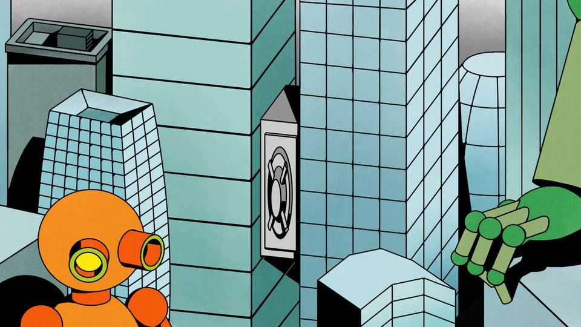
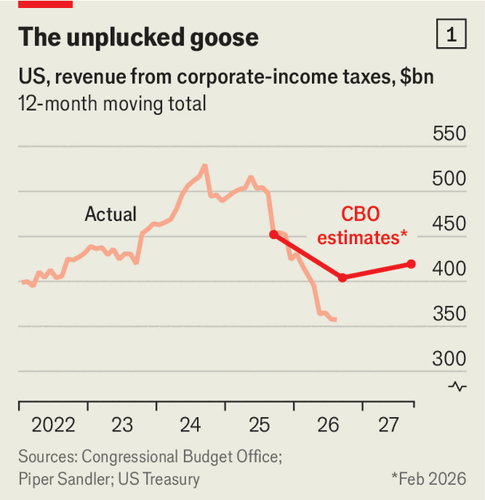
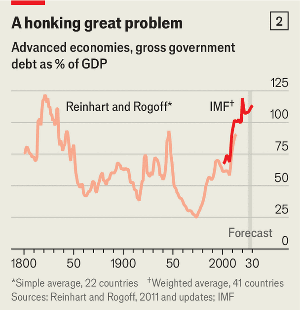
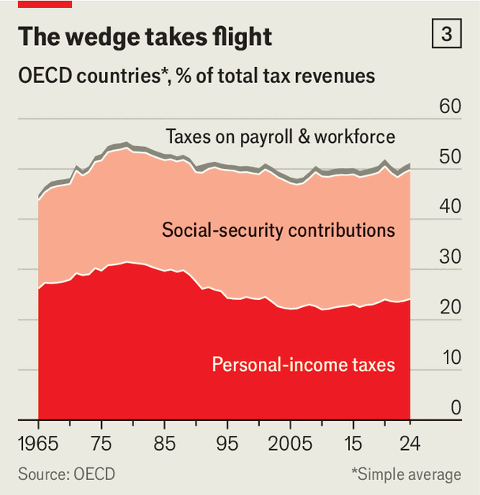
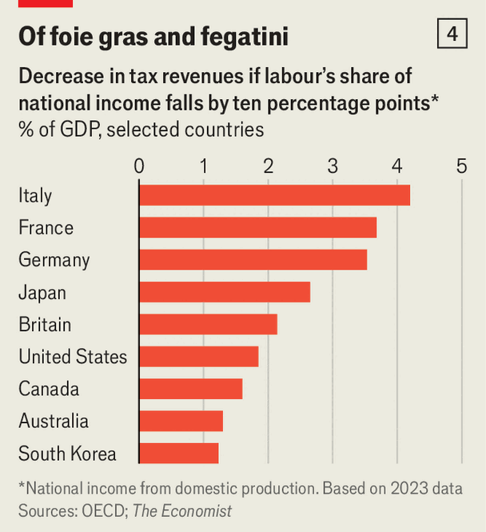

How the AI boom could worsen the rich world’s fiscal crunch
Even with higher growth, taxes may be harder to find

Oct 1st 2026
VAST SPENDING on AI infrastructure has created a profit boom. In the past year American pre-tax corporate earnings have grown by $1.2trn, or 30%. Companies in the S&P 500 index are handily beating forecasts. And yet Uncle Sam is seeing little of the benefit. Taxes on corporate profits have collapsed (see chart 1l). Government bean-counters did expect lower receipts this year, owing to changes that let firms write off more investments against their tax bills. But the scale of the drop has surprised even them, as unusually profitable tech giants are writing off unusually high capital spending. The episode hints at how AI may upend tax systems across the world.


You might think of AI as a godsend for governments, many of which are accumulating vast debts (see chart 2). Economists expect AI to lift productivity growth, which should create a bigger economy. In a recent paper Karen Dynan, Douglas Elmendorf and Louise Sheiner, three economists, model the potential effects of AI on America’s debt. Higher economic growth could reduce the debt-to-GDP ratio after 30 years by 50% or so of GDP, relative to where it would be otherwise.
Good news? Kind of. America’s debt ratio keeps rising—just less quickly than before. Even in an America where AI turbocharges the economy, by the 2050s the government could be much more indebted than today. The risk is that tax receipts continue to lag behind spending, sometimes by many trillions of dollars. It is even possible that AI may not reduce budget deficits, but widen them.

One problem is that AI may create value in areas which governments tax lightly while destroying value in the more heavily taxed bits. The economy could expand rapidly while leaving the government increasingly starved of funds. At present governments get most of their revenues from workers. Across the OECD club of mostly rich countries, personal-income taxes and social-security contributions account for a high and rising share of overall tax revenues (see chart 3). In America about three-quarters of all federal tax revenues come from labour. Taxes on consumption and capital (including corporate profits and capital gains) are smaller.
This tax mix may not suit a world in which AI displaces workers or radically reduces their salaries, even as corporate profits balloon. “As AI reduces labour’s share of income, the traditional tax base erodes,” argue Anton Korinek of Anthropic and Lee Lockwood of the University of Virginia, in a recent paper. The Budget Lab, part of Yale University, explores a range of scenarios in which AI boosts annual GDP growth to as much as 3.3%. This produces higher tax revenues—but the extent of the boost depends greatly on the distribution of the extra income between capital and labour.
The Yale economists envisage AI having fairly modest economic effects for the time being. GDP growth of 3.3% would be impressive, but not unprecedented. Others envisage a deeper economic transformation. In an essay last year Philip Trammell of Epoch AI, a think-tank, and Dwarkesh Patel, a podcaster, entertained the possibility that “the share of total income paid to robot-owners” would rise to 100%. A shift need not be this extreme to produce a profound fiscal shock.

To gauge how profound, The Economist has calculated the effects on tax revenues of AI causing labour’s share of national income to decline by ten percentage points. A few countries with relatively high taxes on capital, including Australia and South Korea, emerge relatively unscathed. But the majority of governments that rely on labour taxes would be crippled (see chart 4). In Italy, the hardest-hit big country in our model, the budget deficit could more than double as a share of GDP (assuming that spending remains constant relative to GDP). France and Germany are not far behind. America takes a smaller but still significant hit—both because it taxes labour fairly heavily relative to capital and because wages and salaries form an unusually large share of GDP.
A falling tax-to-GDP ratio is not necessarily a bad thing. If real GDP rises by 30% and real tax revenues rise by 20%, the government might be smaller relative to the economy but it would still have more resources at its disposal. And if the government could then deploy AI, it might also be able to spend that money more effectively. In health care, for instance, AI could improve scheduling, diagnostics and drug discovery, while reducing the overall cost of the system. It could usher in a golden age of public services.
However, a less shiny outcome is also possible. AI could raise the cost of providing public services, even as it increases demand for them. Governments may then find themselves needing more tax revenues just as these get harder to obtain.
One problem is what economists call “cost disease”. In industries where AI productivity effects are largest, such as software development, wages will rise. What is great for software developers is, however, not so great for other firms and especially the public sector, where productivity does not grow as fast. Public institutions will still need to pay staff more in order to stop them leaving for better-paid jobs. The costs of providing a given public service will rise. This is the fundamental reason why the government tends to get bigger as a country gets richer.
Even as it raises their cost, AI may also increase demand for public services. People displaced by AI would need retraining and unemployment support. Some governments could consider a universal basic income to ward off the mobs. In our scenario, if the Italian government wanted to replace the lost earnings of the people that AI had displaced, it would need to find another $200bn per year as its tax revenues declined by $90bn, a fiscal deterioration of about 10% of GDP.
One way for fiscal systems to cope is to slow or stop the adoption of AI. Daron Acemoglu of the Massachusetts Institute of Technology, Andrea Manera of the IMF and Pascual Restrepo of Yale University have argued that America’s tax system favours automation by taxing labour heavily while offering generous tax treatment to assets such as software and machinery. This, they say, gives bosses an incentive to replace workers with technology.
Some economists therefore prefer taxing AI directly, perhaps through a “compute tax” (which would be levied on the computing power used to train models) or a “token tax” (on each use of a model). With the public increasingly hostile to AI, such a tax could be popular even if it came at a significant cost to the economy, deprived of AI’s benefits.
However, it might raise surprisingly little revenue. We estimate that American consumers and businesses currently spend about $700bn a year on building and running AI models. This is a tiny tax base relative to the total labour bill ($16trn last year). AI spending may balloon from here, but by how much is anyone’s guess. Total capital investments in AI from big tech firms are expected to level off from 2028, whereas technological improvements might mean that businesses’ spending on AI need not rocket. The revenue from such a tax is thus highly uncertain.
Rather than tax AI at source, therefore, governments are likelier to go after the gains of the AI boom. One option is to tax wealth. In November Californians will vote on a proposal to levy 5% on the net wealth of residents worth over $1bn. Politicians in other states like the idea and several big-cheese economists, including Mr Acemoglu, have endorsed it. Lowering the threshold below $1bn would net more of the multimillionaires the AI boom is minting.
Yet robust academic evidence shows that the rich respond to wealth taxes by shifting assets offshore, or moving themselves. Privately owned businesses, where many keep their riches, are also notoriously hard to value, making it hard for the taxman to know how much to demand. What was John D. Rockefeller’s stake in Standard Oil, which was not listed, really worth? Such considerations help explain why many countries that had introduced wealth taxes have abandoned them. In 1990, 11 rich countries raised money by taxing fortunes; today only four do.
Even if AI could help determine the “true” value of an unlisted business or if super-clever AI tax auditors make it harder to shift assets abroad, a wealth tax might not raise anywhere near enough money. In March a group of American lawmakers introduced a proposal to establish a 2% annual tax on the net worth of households and trusts valued at over $50m, and an additional 1% surcharge on those above $1bn. According to the (extremely generous) assumptions of the bill’s proponents, it would raise the equivalent of 15% of current labour taxes. In reality, it would probably raise a lot less. Most independent studies of wealth taxes find that they also slow the economy, reducing the receipts from other taxes.
Perhaps AI will create many more mega-fortunes for governments to tax more highly? The trouble with such an assumption is that many appear to be donating money to charity as fast as they make it: all seven co-founders of Anthropic, the leader AI lab seeking a $2trn initial public offering, have pledged to give away 80% of their wealth. An AI world could have a huge share of personal wealth tied up in charitable foundations rather than bank balances and mansions. And if taxable fortunes do not grow fast, then high tax rates would chip away at them quickly.
Among economists a consensus is therefore emerging that changes to existing taxes may be preferable to new levies. This is especially true of taxes on capital income, which includes corporate profits, dividends and realised capital gains. If AI lives up to the hype, related capital income could be truly enormous.
One reform would be to bring tax rates on capital gains closer to those on labour income. California already applies ordinary income-tax rates to realised capital gains. Belgium recently introduced a 10% tax on gains from financial assets, closing a loophole that had previously spared such income. Australia is raising taxes on realised capital gains, but giving some relief to taxpayers by adjusting those gains for inflation. The Netherlands is seeking to replace a bizarre tax system in which everyone was assumed to have the same investment gains—giving good investors an advantage—with one taxing actual gains.
To minimise the extent to which the tax system discourages enterprise, levies on capital gains (above the normal return on investment) could be matched by equally generous relief for any capital losses. People who made a negative return on an investment could, for example, write off these losses not just against future capital gains, but perhaps also against past gains and other income.
Corporation taxes could chip in more, too, especially if the AI economy produces more “excess profits” above what a company needs to earn in order to invest. These could be generated by monopoly power, scarce land or unique data sets. In theory such extraordinary gains can be taxed with relatively little damage to incentives. Already a number of countries are raising corporation taxes, reversing the trend of the 2000s and 2010s.
AI also strengthens arguments for the taxes that many economists love best: on consumption. These are difficult to avoid and can raise vast sums. Rich people spend more than poor people, and therefore pay the lion’s share of consumption taxes. To the extent that governments want to compensate poorer households, which tend to pay more than the rich as a share of their income, they can do so through the welfare state. As machines take a greater role in producing income, the taxman may have to pay less attention to how money is made and more to where it goes.■